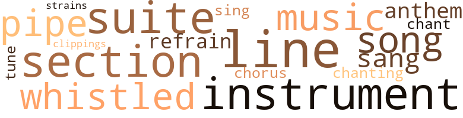
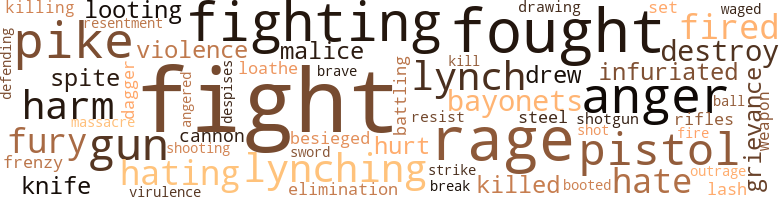
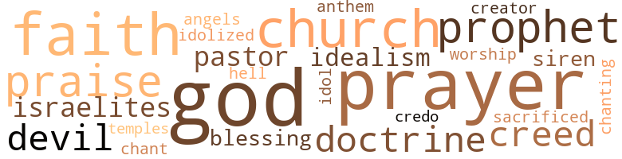

Loot, by Alexander, Truman (1932)
31 music-related terms matched in this text.
Most frequent terms in this topic: line (4); suite (3); section (3); song (2); whistled (2)
chant.n.01
Definition: a repetitive song in which as many syllables as necessary are assigned to a single tone
| word | sentence |
|---|---|
| chant | Nigger lover ! " came a chant from the mob . |
chorus.n.01
Definition: any utterance produced simultaneously by a group
| word | sentence |
|---|---|
| chorus | There was a chorus of assent . |
clipping.n.01
Definition: an excerpt cut from a newspaper or magazine
| word | sentence |
|---|---|
| clippings | He was careful to send a batch of clippings to a famous magazine editor of that city whose iconoclastic magazine had often attacked Southern institutions . |
hymn.n.01
Definition: a song of praise (to God or to a saint or to a nation)
| word | sentence |
|---|---|
| anthem | A band from one of the State institutions , made up of gangling boys , struck up the State anthem as the party entered and there was a roar of applause . |
music.n.01
Definition: an artistic form of auditory communication incorporating instrumental or vocal tones in a structured and continuous manner
| word | sentence |
|---|---|
| music | At intervals the colored band burst into hearty and unrestrained music . |
| music | It was shared by the wandering gentlemen of color along the road , attracted from the cotton fields by the music and the cheering . |
musical_instrument.n.01
Definition: any of various devices or contrivances that can be used to produce musical tones or sounds
| word | sentence |
|---|---|
| instruments | At intervals the Ethiopian minstrels took their instruments from their mouths and shouted the words of a song . |
| instrument | The telephone and telegraph companies likewise cooperated and Harpeth Falls , for the first time , had a long distance line and a clattering telegraph instrument . |
| instrument | " This is an off-year - no presidential election , " explained Kelly , jiggling the instrument impatiently . |
pipe.n.04
Definition: a tubular wind instrument
| word | sentence |
|---|---|
| pipe | On the porch , Colonel Steele smoked his pipe placidly , unworried by the election . |
| pipe | Sprawled in the comfortable chair , pipe filled with tangy home-grown tobacco , a pitcher of cool spring water at his elbow on the scrubbed pine porch table , Colonel Steele , with half-closed eyes , seemed oblivious to the scene about him . |
refrain.n.01
Definition: the part of a song where a soloist is joined by a group of singers
| word | sentence |
|---|---|
| refrain | It was in time-honored form , binding the new Governor to support the Constitution , to uphold the laws and refrain from fighting a duel , the latter a relic of frontier days in the State 's ancient constitution . |
section.n.01
Definition: a self-contained part of a larger composition (written or musical)
| word | sentence |
|---|---|
| section | Kelly made the most of the State highway program , never promising a road until the leading politicians of the section affected by the new highway had promised to line up for Ambler . |
| section | He was sure of this diagnosis , when one member from a rural section informed him that he was against his proposal to abolish the State tax on land on the grounds that it would irritate the farmers who would regard it as charity . |
| section | The Governor 's palor betrayed that Colonel Steele had reminded him of a forgotten section of the State 's constitution . |
sing.v.02
Definition: produce tones with the voice
| word | sentence |
|---|---|
| sang | " You do n't go to church , do you , Mayor ? " sang out a voice from the rear , and the crowd rocked with laughter . |
| sing | " Senators do n't get us nothing , " said Kelly shortly , " especially if they do n't sing the same tune as the national administration . |
song.n.01
Definition: a short musical composition with words
| word | sentence |
|---|---|
| song | At intervals the Ethiopian minstrels took their instruments from their mouths and shouted the words of a song . |
| song | Pierce hummed a snatch of song , which Ambler remembered from army days . |
suite.n.01
Definition: a musical composition of several movements only loosely connected
| word | sentence |
|---|---|
| suite | Then suddenly the girl raised her voice and said : " John , you are hurting me - you are hurting my breasts - do n't - do n't ------ " There was a knocking at the door leading to the adjoining suite , and rough voices . |
| suite | Close to the door to Ambler 's suite was a table on which lay an opened stenographer 's notebook , a small bottle of ink and a stenographer 's pen . |
| suite | Leading from it were wires to the adjoining suite . |
tone.v.01
Definition: utter monotonously and repetitively and rhythmically
| word | sentence |
|---|---|
| chanting | " All about the Senate passing Harpeth Falls bill over the Governor 's veto , " the boys were chanting . |
tune.n.01
Definition: a succession of notes forming a distinctive sequence
| word | sentence |
|---|---|
| line | If it came to the worst , he would simply have to whip the youngster in line , by the Eternal ! |
| line | He had loaded the drawing room of the Hot Springs Limited with roses and the old Colonel himself had scrawled a line of thanks , along with the information that he hoped to be home after taking the three weeks treatment . |
| line | " Every line of it has been passed , " said Kelly , grinning . |
| line | Framed in the doorway , leaning on his cane as Jove might poise on a thunderbolt from high Olympus , stood Colonel Gideon Wade Steele , his mouth drawn in a grim line , his eyes as steely blue as an icicle from the capitol eaves outside . |
| tune | " Senators do n't get us nothing , " said Kelly shortly , " especially if they do n't sing the same tune as the national administration . |
| strains | But the band never got to play more than the 77 opening strains of " Dixie . " |
whistle.v.01
Definition: make whistling sounds
| word | sentence |
|---|---|
| whistled | The man whistled in amazement . |
| whistled | Majors and Griffin , who knew where the bulk of this sum would have to come from , whistled in disbelief . |
146 violence-related terms matched in this text.
Most frequent terms in this topic: fight (18); rage (7); fought (7); anger (6); fighting (6)
abhor.v.01
Definition: find repugnant
| word | sentence |
|---|---|
| loathe | I loathe you ! " |
anger.n.01
Definition: a strong emotion; a feeling that is oriented toward some real or supposed grievance
| word | sentence |
|---|---|
| anger | Ambler 's eyes blazed with anger . |
| anger | It came to him not in the manner of other days with laughing brown eyes , vivid cheeks and inviting lips , but with tears of anger in the deep pools of brown and lips so tightly drawn that they seemed an archer 's bow-strings drawn in anger , instead of a Cupid 's bow . |
| anger | It came to him not in the manner of other days with laughing brown eyes , vivid cheeks and inviting lips , but with tears of anger in the deep pools of brown and lips so tightly drawn that they seemed an archer 's bow-strings drawn in anger , instead of a Cupid 's bow . |
| anger | " Steady there , my friend , " said the Colonel with a glint of anger in his eyes ; " I can handle this situation , but if you do n't trust me to do so , then go ahead and have it your own way . |
| anger | He put his head down on his desk to hide the tears that blinded him - tears of anger and regret . |
| anger | Colonel Steele flushed and then turned white with anger . |
anger.v.02
Definition: become angry
| word | sentence |
|---|---|
| angered | It angered him . |
battle.v.01
Definition: battle or contend against in or as if in a battle
| word | sentence |
|---|---|
| Battling | " Where 'd Battling Kid Kelly get the jail-birds ? " asked the newspaper man , and Ambler learned confirmation of his suspicions that the men were not plain citizens from the great open spaces with the good of the prohibition laws at heart , but former convicts with blackmail records , very probably hired by the unscrupulous Kelly to do the job of framing the opposition candidate . |
bayonet.n.01
Definition: a knife that can be fixed to the end of a rifle and used as a weapon
| word | sentence |
|---|---|
| bayonets | " Have the men fix their bayonets , " whispered Governor Ambler , " and no shooting unless I give the word . " |
| bayonets | Before the gleaming eyes of the mob , caught in the flashlights of the guardsmen packed in the hallway below , the great doors swung open , revealing row on row of troops , their bayonets fixed , a ring of steel . |
| bayonets | When the old war horse who had served as Governor of the State during the Civil War - sometimes moving his seat of government two jumps ahead of Federal bayonets - came to Steeleville on his campaign for the United States Senate , it was almost as though the Lord of Hosts in person had come down from Sinai to deliver the tablets of stone . |
besiege.v.01
Definition: surround so as to force to give up
| word | sentence |
|---|---|
| besieged | While writing his inaugural address in his rooms at the Hotel Patrick Henry , Ambler was besieged by job-seekers , pardon-seekers , and visited by members of the Legislature . |
boot.v.01
Definition: kick; give a boot to
| word | sentence |
|---|---|
| booted | In other words , Mr. Jenkins has served his purpose well and now must be booted out of the race . |
cannon.n.04
Definition: heavy automatic gun fired from an airplane
| word | sentence |
|---|---|
| cannon | The calm was shattered by the crashing of cannon . |
contemn.v.01
Definition: look down on with disdain
| word | sentence |
|---|---|
| despises | But she continued to utter honeyed words as an actress to her leading man who , in private life , she despises . |
craze.n.02
Definition: state of violent mental agitation
| word | sentence |
|---|---|
| frenzy | In a week Ambler was almost in a frenzy . |
dagger.n.01
Definition: a short knife with a pointed blade used for piercing or stabbing
| word | sentence |
|---|---|
| dagger | The Governor was at dagger 's points with Judge Griffin . |
destroy.v.04
Definition: put (an animal) to death
| word | sentence |
|---|---|
| destroy | Conservationists feared , however , that the necessary dams to provide storage for the dry seasons would destroy the natural beauty of the resort . |
| destroy | If the manufacture of electricity at this waterfall would destroy it , it could not be justified even on the broad grounds of public policy . |
| destroy | If you will eliminate Dam One in your plan , which is the dam that would destroy the falls , and use only Dams Two and Three in your plan , I 'll sign the bill ! " |
draw.v.23
Definition: pull (a person) apart with four horses tied to his extremities, so as to execute him
| word | sentence |
|---|---|
| drew | Ambler talked to him a few minutes , but he confirmed Shad 's story from the moment the car drew up in front of the house at Cheatham and the woman screamed . |
| drawing | Through the streets the trucks lumbered at full speed , drawing up before the courthouse . |
| drew | It drew up with screeching brakes at the very doors to the courthouse . |
elimination.n.05
Definition: the murder of a competitor
| word | sentence |
|---|---|
| elimination | Such a reform , he said , was the proposed elimination of the state tax on land . |
engage.v.07
Definition: carry on (wars, battles, or campaigns)
| word | sentence |
|---|---|
| waged | There was at that time a bitter fight being waged for the possession of the county seat between Steeleville and its municipal rival , Cheatham , twelve miles down the river , a mushroom town which had sprung up in the seventies from a river pirate 's nest of an earlier period . |
fight.n.02
Definition: the act of fighting; any contest or struggle
| word | sentence |
|---|---|
| Fighting | They were riding , these boys in khaki , as their fathers had ridden to King 's Mountain , to surround Cornwallis , to follow Andrew Jack-son to New Orleans , behind Marse Robert E. Lee in Virginia , behind Fighting Joe Wheeler in Cuba , against the Mexicans with Black Jack Pershing , in the trenches of France - riding gaily on a high adventure . |
fight.n.05
Definition: a boxing or wrestling match
| word | sentence |
|---|---|
| fight | If his friends boasted that Gid Steele never lost a political fight and his enemies hurled at him the charge that he was building up a political machine , he let both say what they would . |
| fights | There was talk of legislation and two fights when rural solons disagreed over a bill to prohibit dogs running at large , such legislation always bringing on a debate as hot as a religious argument in the South . |
| fight | He would make only a nominal fight in the Senate to have his veto sustained because a fight there was hopeless , but he would throw into the House fight every ounce of his strength . |
| fight | He would make only a nominal fight in the Senate to have his veto sustained because a fight there was hopeless , but he would throw into the House fight every ounce of his strength . |
| fight | He would make only a nominal fight in the Senate to have his veto sustained because a fight there was hopeless , but he would throw into the House fight every ounce of his strength . |
| fight | " My appointees are either for me or against me in this fight . " |
| fight | He felt that the machine had sidetracked him too easily in the fight for the Speakership and he was willing to join the man who had been the cause of that sidetracking . |
| fight | " I 'm ready for a fight or a frolic . " |
| fight | " I 'm afraid it 's a fight this time , " said Ambler gloomily , as he explained . |
| fight | It silhouetted the little group as in the spotlight of a theatre - the Colonel , his face white and set , yet at peace , as of one who has fought a good fight and made a decision that quiets his heart } the old minister , the little mayor , the Adjutant General in his new uniform , the girl with pride and love in her eyes , the tall young Governor , his face grim , and determined . |
| fight | And then , to the sobbing girl : " Honey , I won my last fight ! " |
| fight | To say the least , it would make the fight unnecessarily hard . " |
| fight | There was at that time a bitter fight being waged for the possession of the county seat between Steeleville and its municipal rival , Cheatham , twelve miles down the river , a mushroom town which had sprung up in the seventies from a river pirate 's nest of an earlier period . |
| fight | " Whistle , if you like , " said Kelly amiably , " but even if we did n't have a hard fight we 'd have to keep our organization together and in good working order in each county . |
| fight | We 're going to have the hardest fight and the biggest victory of our lives . " |
| fight | Maybe we might lose one or two we 've been figgering on , or they might lose one or two they 've been figgering on , but the fight 's about plumb even now . |
fight.v.02
Definition: fight against or resist strongly
| word | sentence |
|---|---|
| fought | " For fifty years I have fought the battles of my State and my party , " he was accustomed to say , " and I am now asking to serve both for the last time I shall hold any public office , rounding out my career in the Governor 's office in my State . " |
| fought | Apparently they fought out the campaign to the end , using mainly their skill for organization , even though an organization which even the busy Ambler could sense was functioning on a golden stream of cash from the Steele war chests and that was using political patronage to control tens of thousands of votes . |
| fighting | It was in time-honored form , binding the new Governor to support the Constitution , to uphold the laws and refrain from fighting a duel , the latter a relic of frontier days in the State 's ancient constitution . |
| fighting | " That 's a lie , " squealed Flippen , and they were fighting in a moment . |
| fighting | " Go to Hot Springs this morning , " said the Governor with a fighting ring in his voice , " and bring the Colonel back if he can possibly travel . |
| fought | The devil could only be fought with fire and if Colonel Steele 's organization thought the Governor was too high-minded not to fight them with every weapon he had , then he 'd show them . |
| fight | The devil could only be fought with fire and if Colonel Steele 's organization thought the Governor was too high-minded not to fight them with every weapon he had , then he 'd show them . |
| fighting | The tense atmosphere of the room dispelled the Adjutant General 's light mood at once and his face took on a fighting quality . |
| fought | It silhouetted the little group as in the spotlight of a theatre - the Colonel , his face white and set , yet at peace , as of one who has fought a good fight and made a decision that quiets his heart } the old minister , the little mayor , the Adjutant General in his new uniform , the girl with pride and love in her eyes , the tall young Governor , his face grim , and determined . |
| defending | There was a long wrangle over the matter , but when it simmered down only Majors was defending the erring Congressman . |
| fought | John Ambler 's grandfather and the Colonel 's father had fought side by side in the Confederate army . |
| fought | Besides , he fought the anti-evolution bill . |
| fighting | The anti-evolution bills in all the Southern states were fool laws , of course , but you did n't see the practical politicians fighting 'em , did you ? |
| fought | John Ambler 's grandfather and my father fought together in the Confederate army . |
| fighting | The Colonel was donning his fighting clothes . |
| fight | Through it , then a stockaded village with a blockhouse , had gone the long riflemen to fight the British at King 's Mountain , in the War of the Revolution . |
| fight | Indeed , that few men could stand up and fight him . |
fracture.n.01
Definition: breaking of hard tissue such as bone
| word | sentence |
|---|---|
| break | " You almost got a bad break there , Ambler , " said Pierce . |
fury.n.01
Definition: a feeling of intense anger
| word | sentence |
|---|---|
| rage | Ambler 's face was white with rage . |
| rage | It filled him with white-hot rage such as he had never known before . |
| rage | In a cold rage he sent for both Speakers , together with the administration leaders in both Houses and the heads of the most important committees . |
| rage | The threat threw many of the leaders into a rage , but it was effective . |
| fury | In cold fury , Ambler added : " Now get out of my office , and stay out . " |
| fury | The Governor sent for Padgett with black fury in his heart . |
| rage | " Call off Flip-pen and his bloc of men in the house , let us pass this bill over your veto , or , by God , we 'll break you - ruin you ---- " His voice was rising to a shriek , his face distorted with rage , when there came an unexpected interruption . |
| rage | A howl of rage went up . |
| fury | When the fury of the mob had spent itself and lulled for a moment , Ambler went on : " I have known this accused negro and his father for many years . |
| rage | It came from " Bull " Anniston , the woman 's brother , standing pistol in hand , face distorted with rage . |
grudge.n.01
Definition: a resentment strong enough to justify retaliation
| word | sentence |
|---|---|
| grievance | Flippen soon revealed that he had a grievance against the Steele organization , or perhaps it was only a fancied grievance trumped up to quiet whatever conscience he had left to enable him to make a trade with the Governor . |
| grievance | Flippen soon revealed that he had a grievance against the Steele organization , or perhaps it was only a fancied grievance trumped up to quiet whatever conscience he had left to enable him to make a trade with the Governor . |
gun.n.01
Definition: a weapon that discharges a missile at high velocity (especially from a metal tube or barrel)
| word | sentence |
|---|---|
| guns | But Ambler stuck to his guns and refused to compromise . |
| guns | " In case we should need them , we can get to Jeffersonville in an hour by using army trucks and we can carry machine guns , too . |
| guns | The men piled out , just in the nick of time , for around the far corner of the square , advancing under torches , waving sticks and guns , cursing and swaggering , came the mob ! |
| gun | A squad of men in khaki elbowed their way out on the little balcony and set up the machine gun to sweep the mob below . |
| gun | Then he leaned forward and spat out his words like the fire of a machine gun . |
hate.v.01
Definition: dislike intensely; feel antipathy or aversion towards
| word | sentence |
|---|---|
| hate | You have to be prompted by my father to propose to me - I hate you . |
| hate | " I hate you , " said Julia distinctly from behind the door . |
| hating | Ambler went home , hating Pitts , hating himself , hating his party and the honors it had bestowed upon him . |
| hating | Ambler went home , hating Pitts , hating himself , hating his party and the honors it had bestowed upon him . |
| hating | Ambler went home , hating Pitts , hating himself , hating his party and the honors it had bestowed upon him . |
| hates | " She hates me . " |
indignation.n.01
Definition: a feeling of righteous anger
| word | sentence |
|---|---|
| outrage | He could best strike back at the perpetrator of the outrage by making a winning race for Governor . |
infuriate.v.01
Definition: make furious
| word | sentence |
|---|---|
| infuriated | In fact , it infuriated him . |
| infuriated | Although his own career had been characterized by much craft and cunning , the devious indirections of the Congress irritated him no little , while the operation of the government bureaus positively infuriated him . |
injury.n.01
Definition: any physical damage to the body caused by violence or accident or fracture etc.
| word | sentence |
|---|---|
| harm | It may do us a great deal of harm . " |
| harm | " Thank heavens , " he was told that night by Kelly , " you spoke too late to do much harm . |
| hurt | The tall young man who was to be the next Governor of the State was recognized by many as he strode along the streets and was cordially greeted by friends and strangers , but it did not soothe his hurt pride . |
| harm | It was not a politic message and it did the administration more harm than good . |
| harm | " No harm shall come to your boy . |
kill.v.10
Definition: cause the death of, without intention
| word | sentence |
|---|---|
| killed | If the veto should be sustained in either House the bill would be killed , but in killing it he would deliver a crushing blow to the Steele machine , which could not survive without power trust support . |
| killing | If the veto should be sustained in either House the bill would be killed , but in killing it he would deliver a crushing blow to the Steele machine , which could not survive without power trust support . |
| Kill | " Kill the God-damned soldiers ! " |
| killed | But if we should lose the governorship , we have killed the goose that laid the golden egg ; we have made it so that we wo n't elect any senators or congressmen . |
knife.n.02
Definition: a weapon with a handle and blade with a sharp point
| word | sentence |
|---|---|
| knife | If they wanted war , they could have war - war without quarter - war to the knife ! |
| knife | The latter pulled out a knife and was advancing on the young Speaker when he was overpowered and disarmed . |
looting.n.01
Definition: plundering during riots or in wartime
| word | sentence |
|---|---|
| looting | But never for an instant since the power interests brought it up at the first conference have I agreed to the looting of Harpeth Falls . |
| looting | That has been the price of my agreement to the looting or the State - may God forgive me for being so blinded by my ambition ! " |
lynch.v.01
Definition: kill without legal sanction
| word | sentence |
|---|---|
| lynch | He was held in the Cheatham jail when Governor Pitts was notified by citizens that another mob was forming to storm the jail and lynch the negro . |
| lynching | The best citizenship of the county cheered him to the echo and the rest , including even a few who had indulged in the lynching party , applauded perfunctorily . |
| lynch | You are not about to lynch merely a negro accused of crime - you are about to lynch the good name of our State ! " |
| lynch | You are not about to lynch merely a negro accused of crime - you are about to lynch the good name of our State ! " |
| lynch | Why , here you lynch your prisoners first and try them afterwards ! " |
lynching.n.01
Definition: putting a person to death by mob action without due process of law
| word | sentence |
|---|---|
| lynching | But Kelly frowned in real irritation when Ambler departed a moment later from his prepared speech to pledge that no-whipping or lynching of any person , white or black , could occur in the State during his administration , if the strong arm of the law could arrive in time . |
| lynchings | Kelly remembered there had been two lynchings in Cheatham within the year and that a lawless band of nightriders and whitecaps was then operating in the county to terrorize the negroes . |
| lynching | There was a roar of laughter as the waggish operator added : " Posses are searching for the lone Armistead voter and a lynching is feared . " |
malice.n.01
Definition: feeling a need to see others suffer
| word | sentence |
|---|---|
| spite | We 'll nominate you tomorrow in spite of hell and high water . |
| spite | " A bolt in a good enough cause , " commented Colonel Steele who was politically bone dry in spite of his pre-war cellar , " but a bolt is a bolt and they never come back . |
| malice | The girl 's eyes blazed with malice at the contempt in Ambler 's eyes . |
| malice | Ambler shuddered at the malice of the scheme . |
musket_ball.n.01
Definition: a solid projectile that is shot by a musket
| word | sentence |
|---|---|
| ball | He began to realize fully that his administration would have to play ball with the machine - to name its men , adopt all its purely political gestures and furnish the nourishment upon which a political machine thrives , but he salved his conscience with the thought that he would have served his State by requiring the organization at the same time to translate into laws many reforms for which the better elements of the State had been clamoring for years . |
open_fire.v.01
Definition: start firing a weapon
| word | sentence |
|---|---|
| fired | " I care nothing for your applause , " said Ambler , " but I am fired with a vision of usefulness and service for our beloved State . " |
| fired | They could not have actually removed the graceful old stone courthouse from Steeleville , but they could have taken the county records and fired the building . |
| fired | He waited a moment until the cheering had subsided and then another moment until the heavy booming of a gubernatorial salute , fired by a National Guard artillery unit outside , had died away . |
| fire | Or it might fire all the contractors and do the work on force account . " |
pain.v.02
Definition: cause emotional anguish or make miserable
| word | sentence |
|---|---|
| hurt | The old Colonel , hurt by the young man 's stubbornness which he had hoped all along to conquer , dropped the subject reluctantly . |
pike.n.04
Definition: medieval weapon consisting of a spearhead attached to a long pole or pikestaff; superseded by the bayonet
| word | sentence |
|---|---|
| pike | As such he had been chiefly instrumental in the court 's voting to grant a franchise to a new turnpike company which was given the right to repair the pike roads and cash in on them by erecting toll gates . |
| pikes | It was finally lodged in the Steele stables not because of the state of mind into which it threw the countryside , for Steele was casually contemptuous of public opinion , but because the rutted pikes were always snagging the rutted dustpan and its operation in muddy weather was impossible . |
| pike | She directed him to stop at the first house on the pike outside Cheatham . |
| pike | Through Steeleville and down the smooth pike to Cheatham the motor trucks rushed in the night . |
| pike | Across the winding gravel drive to the pike , behind the box bushes , a small flock of sheep grazed on the lawn , stirred to anxious head-liftings at intervals as their bellwether moved to greener spots of the bluegrass . |
| pike | As I recall our previous conference , we are now down to three names : Judge Ambrister , Congressman Jenkins and young John Ambler , my neighbor up the pike towards Steeleville . |
pistol.n.01
Definition: a firearm that is held and fired with one hand
| word | sentence |
|---|---|
| pistol | With a pistol at his ear , young Shad drove to the county jail near the courthouse and there he was thrown into a cell . |
| pistols | He heard the cocking of pistols in the mob below . |
| pistol | He pointed out " Bull " Anniston in one of the front ranks of the mob , pistol in hand . |
| pistol | It came from " Bull " Anniston , the woman 's brother , standing pistol in hand , face distorted with rage . |
| pistol | From below came the crack of a pistol and the old Colonel fell into Fitzgerald 's arms . |
resentment.n.01
Definition: a feeling of deep and bitter anger and ill-will
| word | sentence |
|---|---|
| resentment | As if in hot resentment of the white man who has to compete with negro labor , Cheatham had sprung into being . |
resist.v.04
Definition: withstand the force of something
| word | sentence |
|---|---|
| resist | He could resist and cause no end of trouble . |
rifle.n.01
Definition: a shoulder firearm with a long barrel and a rifled bore
| word | sentence |
|---|---|
| rifles | Behind the top clapboards of the first story , his father had told him , were portholes through which pioneer Steeles had upon occasions thrust their long rifles to shoot at marauding Indians or savage river pirates . |
shoot.v.02
Definition: kill by firing a missile
| word | sentence |
|---|---|
| shot | Had Ambler uttered the sentence they would have shot him , but it was the old Colonel with years of colorful background behind him and a look in his cold grey eyes that said : " Shoot and be damned to you ! " |
shooting.n.02
Definition: killing someone by gunfire
| word | sentence |
|---|---|
| shooting | " Have the men fix their bayonets , " whispered Governor Ambler , " and no shooting unless I give the word . " |
shotgun.n.01
Definition: firearm that is a double-barreled smoothbore shoulder weapon for firing shot at short ranges
| word | sentence |
|---|---|
| shotgun | Shad sat paralyzed with amazement as the man burst out the door with a shotgun in his hand , followed by other men . |
sic.v.01
Definition: urge to attack someone
| word | sentence |
|---|---|
| set | These had begun to dribble in for display on the screen near the falls , set on the broad lawn sloping down to the river . |
slaughter.n.03
Definition: the savage and excessive killing of many people
| word | sentence |
|---|---|
| massacre | It would be a massacre - a butchery to uphold the law . |
strike.v.04
Definition: make a strategic, offensive, assault against an enemy, opponent, or a target
| word | sentence |
|---|---|
| strike | He could best strike back at the perpetrator of the outrage by making a winning race for Governor . |
sword.n.01
Definition: a cutting or thrusting weapon that has a long metal blade and a hilt with a hand guard
| word | sentence |
|---|---|
| steel | Into his tradition crept the note that Gid was smart as a steel trap ; he 'd outguess and outsmart you . |
| sword | Brown eyes burn the midnight oil and lay the plans of empire , but blue eyes carry the sword . |
violence.n.01
Definition: an act of aggression (as one against a person who resists)
| word | sentence |
|---|---|
| violence | " Is there any indication of mob violence ? " asked Ambler . |
| violence | " Take the word of Gid Steele for it , " said the old Colonel , " that tonight 's violence was as carefully staged for a mean and low purpose as was the scene in that room that night . " |
virulence.n.02
Definition: extreme hostility
| word | sentence |
|---|---|
| virulence | That he was an important cog in the Steele organization was attested by the virulence with which the opposition press attacked him under the nickname of " Scotty , the pay-off man . " |
weapon.n.01
Definition: any instrument or instrumentality used in fighting or hunting
| word | sentence |
|---|---|
| weapon | The devil could only be fought with fire and if Colonel Steele 's organization thought the Governor was too high-minded not to fight them with every weapon he had , then he 'd show them . |
weather.v.01
Definition: face and withstand with courage
| word | sentence |
|---|---|
| brave | They stood behind the Confederate entrenchments at Cold Harbor and watched the brave men of Grant 's army spend themselves - men who went to death , so certain that they pinned their names and numbers on slips of paper on their backs that they might be identified when dead ! |
whip.v.04
Definition: strike as if by whipping
| word | sentence |
|---|---|
| lash | A whip lash could not have taken Ambler more by surprise . |
64 religion-related terms matched in this text.
Most frequent terms in this topic: God (9); prayer (8); faith (5); church (3); praise (3)
blessing.n.05
Definition: the act of praying for divine protection
| word | sentence |
|---|---|
| blessing | " Well , son , " said the old gentleman , " I reckon your daddy is looking down on us tonight and blessing us both . |
| blessing | Ambler , he said , was an aristocrat , a throw-back to the Old South who regarded the progress of the New South as not an altogether unmixed blessing . |
chant.n.01
Definition: a repetitive song in which as many syllables as necessary are assigned to a single tone
| word | sentence |
|---|---|
| chant | Nigger lover ! " came a chant from the mob . |
church.n.02
Definition: a place for public (especially Christian) worship
| word | sentence |
|---|---|
| church | " You do n't go to church , do you , Mayor ? " sang out a voice from the rear , and the crowd rocked with laughter . |
| church | He belongs to a church that is numerous enough to give him substantial support and that 's not an element to be overlooked . |
church.n.04
Definition: the body of people who attend or belong to a particular local church
| word | sentence |
|---|---|
| Church | " Ladies and gentlemen , " he said , " as I was about to say when interrupted , the meeting will be led in prayer by the Rev. John Wesley Smith , pastor of the First Methodist Church . " |
| church | It was General Fitzgerald , arm in arm with Rev. John Wesley Smith , Chaplain of the Legislature and pastor of the Methodist church at Cheatham . |
creed.n.01
Definition: any system of principles or beliefs
| word | sentence |
|---|---|
| creeds | They charged with Pickett up Cemetery Hill with a bravery so astounding that General Meade 's cannoneers held their fire in wonder , because courage stirs the hearts of men of all races and creeds and battle lines . |
| creed | You will find that development of the project will bring the greatest good to the greatest number , which is still a very good political creed . " |
| credo | " Well , here 's my political credo , " said Ambler at last , and he threw a neatly stacked pile of typewritten sheets to Graham and the carbon copies to Pierce . |
| creed | But his cynical creed would not permit him to show the intense enthusiasm he felt for Ambler 's masterpiece . |
curate.n.01
Definition: a person authorized to conduct religious worship
| word | sentence |
|---|---|
| pastor | " Ladies and gentlemen , " he said , " as I was about to say when interrupted , the meeting will be led in prayer by the Rev. John Wesley Smith , pastor of the First Methodist Church . " |
| pastor | It was General Fitzgerald , arm in arm with Rev. John Wesley Smith , Chaplain of the Legislature and pastor of the Methodist church at Cheatham . |
doctrine.n.01
Definition: a belief (or system of beliefs) accepted as authoritative by some group or school
| word | sentence |
|---|---|
| doctrine | Ambler , too sick at heart to even controvert this doctrine , got in his auto and was driven by young Shad to Steeleville for the final speech of his . |
| doctrine | campaign , but he swore an oath in his heart that when he became Governor he would uphold the majesty of the law and live the doctrine to which the politicians gave lip service of " equal rights to all , special privileges to none . " |
| doctrines | In politics , it was always pulling against Steele-ville , whose leaders often remarked that every new political wind would find ready sails in Cheatham , which went militantly Populite in the nineties and later came to rest under the umbrageous doctrines of a hooded secret order . |
god.n.03
Definition: a man of such superior qualities that he seems like a deity to other people
| word | sentence |
|---|---|
| God | " My friends , " he said slowly , " only two of God 's living creatures utters a hiss . |
| god | The Armistead candidacy was appealing to a good many old-fashioned people but its aims fell with a dull thud on the ears of many thousands of the up-and-coming citizenry whose god was progress and whose high priests of progress were the highways and the public schools . |
| God | They may be expedient politically , but , by God , they are inexcusable morally . |
| God | And , by God , I 'll stop it . |
| God | " Have these administration bills set for special order and pass them , or , by God , I 'll turn the State upside down , " he raged . |
| God | That has been the price of my agreement to the looting or the State - may God forgive me for being so blinded by my ambition ! " |
| God | " Call off Flip-pen and his bloc of men in the house , let us pass this bill over your veto , or , by God , we 'll break you - ruin you ---- " His voice was rising to a shriek , his face distorted with rage , when there came an unexpected interruption . |
| God | " Go home , men , " he said , " and leave here a great Governor with an unspotted record - a man whom I 'd be proud , by God , to call my son ----- . " |
| God | " ----- but he 's never had any political experience and God save us if that old rabble rouser , who is already running for Governor , gets him in a joint debate . |
| God | " By God , they 've tried to frame you , " he said . |
godhead.n.01
Definition: terms referring to the Judeo-Christian God
| word | sentence |
|---|---|
| creator | She was not at 152 home , old Shad informed him with regret in his shaky old voice , and Ambler wondered how she felt towards him , now that he had defied his political creator and the thunderbolts were hurling around him . |
hell.n.01
Definition: any place of pain and turmoil
| word | sentence |
|---|---|
| hell | " What in hell was the matter in Fort Sumpter County today ? |
hymn.n.01
Definition: a song of praise (to God or to a saint or to a nation)
| word | sentence |
|---|---|
| anthem | A band from one of the State institutions , made up of gangling boys , struck up the State anthem as the party entered and there was a roar of applause . |
idealism.n.01
Definition: (philosophy) the philosophical theory that ideas are the only reality
| word | sentence |
|---|---|
| idealism | In each speech , Ambler tried to draw the crowds more and more away from the sordid side of politics , explaining his own reforms and giving them a glimpse of his own idealism . |
| idealism | His idealism was beginning to be shattered . |
idol.n.01
Definition: a material effigy that is worshipped
| word | sentence |
|---|---|
| idol | " Just a word from you to your friends in Cheatham would control the situation - you are the idol of the town and have been since you saved the courthouse for them . " |
idolize.v.01
Definition: love unquestioningly and uncritically or to excess; venerate as an idol
| word | sentence |
|---|---|
| idolized | " Oh , Kunnel , " sobbed Old Shad , as his befuddled old brain grasped at last the fact that the man he had idolized was weighing the life of his son in the scales against political advantage , " hit 's my little baby boy , Shad , whut was named after his grandpappy who was a slave on your pappy 's plantation - hit 's Shad whut 's in trouble , Kunnel , doan you know it ? " |
jew.n.01
Definition: a person belonging to the worldwide group claiming descent from Jacob (or converted to it) and connected by cultural or religious ties
| word | sentence |
|---|---|
| Israelites | These Israelites , truth to tell , were the only unpaid performers in the entire show . |
| Israelites | The attention of the Israelites along the line of march was riveted in the main on the other gentlemen of color whom they spied in the fields and on the road to Cheatham . |
praise.n.02
Definition: offering words of homage as an act of worship
| word | sentence |
|---|---|
| praise | He met Robert E. Lee and his embattled hosts in Valhalla , paid a touching tribute to Stonewall Jackson , eulogized the Confederate Flag , damned the Puritan fathers with faint praise and heaped enconiums on the Cavaliers . |
| praise | " I got this attack on you purposely to wash away the recollection of that praise . |
| praise | All during the summer it kept bobbing up in the weekly papers of the hinterland , coupled with praise of Ambler for having won the disapproval of the South 's arch critic . |
prayer.n.01
Definition: the act of communicating with a deity (especially as a petition or in adoration or contrition or thanksgiving)
| word | sentence |
|---|---|
| prayer | " We will be led in prayer , " he said in a voice that trembled under the weight of responsibility and so - lemnity , " by the Reverend Mr. uh - that is to say , the Reverend ------- " Here the Mayor broke down completely . |
| prayer | " Ladies and gentlemen , " he said , " as I was about to say when interrupted , the meeting will be led in prayer by the Rev. John Wesley Smith , pastor of the First Methodist Church . " |
| prayer | As the minister retired solemnly to his seat , he was accosted by Ambrose Pierce , the reporter , who asked for a copy of his prayer . |
| prayer | " Honest , Doctor , that was the finest prayer I ever heard , " said the incorrigible newspaper man , sending a covert wink at Ambler . |
| prayer | The flattered minister followed him into the county court clerk 's office , just behind the rostrum , to write out his prayer . |
| prayer | There was a prayer by the Rev. John Wesley Smith of Cheatham , who had been given an appointment as chaplain of the House . |
| prayer | The effect of the prayer vanished instantly . |
prayer.n.04
Definition: a fixed text used in praying
| word | sentence |
|---|---|
| prayer | There was a drunken man in the front ranks of the mob and he shouted in the interlude after the prayer : " Now I 'm ready to hang the nigger ! " |
prophet.n.02
Definition: someone who speaks by divine inspiration; someone who is an interpreter of the will of God
| word | sentence |
|---|---|
| prophet | He moved among the country people like a major prophet come home . |
| prophet | The Steeleville American assigned Ambrose Pierce to the Ambler campaign when the announcement appeared and Editor Daniel Graham endorsed Ambler in a double leader editorial in which he summoned the great men of the South from Thomas Jefferson on down to the present to witness that here was a new prophet upon whom the mantle of the great could worthily descend . |
| prophet | In the next issue of the magazine appeared a violent diatribe on Ambler as the " yokel prophet of the Bible Belt . " |
religion.n.01
Definition: a strong belief in a supernatural power or powers that control human destiny
| word | sentence |
|---|---|
| faith | She did not know how soon her faith in Ambler was to be tested . |
| faith | It was receiving reports that the Armistead managers had not perfected organizations in more than half of the counties , depending apparently on their candidate 's oft repeated declaration that he had " abiding faith in the wisdom and judgment of the American people . " |
| faith | The old gentleman was carried away that night to Hot Springs , attended by Julia and old Shad , and Ambler did not credit him with knowing of the broken faith which shortly came to light not only in regard to Flippen 's candidacy but also on Harpeth Falls . |
| faith | Good government and good faith , he declared , could ask no less than the complete translation into law of every pledge he made , in - asmuch as under the primary system the successful candidate 's platform becomes the party platform . |
| faith | " That is broken faith , " said Jenkins . |
sacrifice.v.04
Definition: make a sacrifice of; in religious rituals
| word | sentence |
|---|---|
| sacrificed | The man was simply sacrificed for nothing . |
saint.n.02
Definition: person of exceptional holiness
| word | sentence |
|---|---|
| angels | At this point Senator Jefferson D. Forrest left the ground entirely and soared in the clouds , shaking hands with the angels in his oratorical flight . |
satan.n.01
Definition: (Judeo-Christian and Islamic religions) chief spirit of evil and adversary of God; tempter of mankind; master of Hell
| word | sentence |
|---|---|
| devil | We 're looking for fifteen hundred majority by midnight , or there 'll be the devil to pay . |
| devil | The devil could only be fought with fire and if Colonel Steele 's organization thought the Governor was too high-minded not to fight them with every weapon he had , then he 'd show them . |
| devil | " I sold my soul to the devil , " he said to himself , half-seriously , " but I got good pay for it . " |
siren.n.01
Definition: a sea nymph (part woman and part bird) supposed to lure sailors to destruction on the rocks where the nymphs lived
| word | sentence |
|---|---|
| sirens | " Let 's go , Sergeant , " said Fitzgerald , quickly , and the motorcade moved forward in the wake of a squadron of State police and motorcycles , with sirens shrieking to clear the road . |
| siren | Its siren was shrieking . |
temple.n.03
Definition: an edifice devoted to special or exalted purposes
| word | sentence |
|---|---|
| temples | The State capitol , the county courthouses and the other temples of government throughout the State were models of Jeffersonian simplicity . |
tone.v.01
Definition: utter monotonously and repetitively and rhythmically
| word | sentence |
|---|---|
| chanting | " All about the Senate passing Harpeth Falls bill over the Governor 's veto , " the boys were chanting . |
worship.n.01
Definition: the activity of worshipping
| word | sentence |
|---|---|
| worship | " But I love you - I worship you , " said Ambler . |